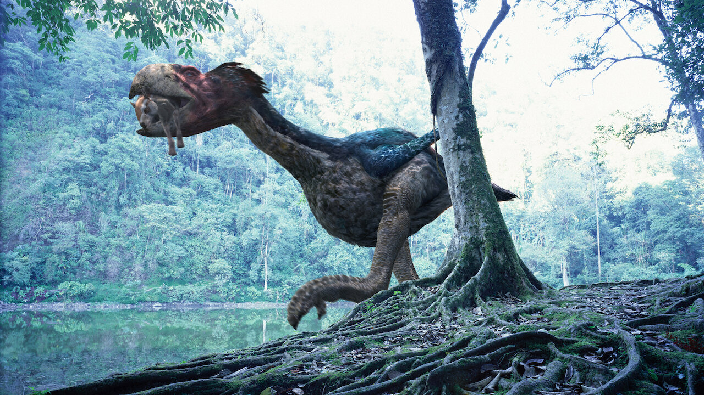
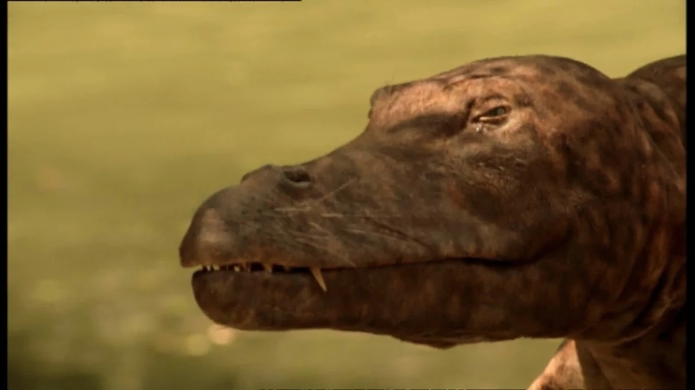
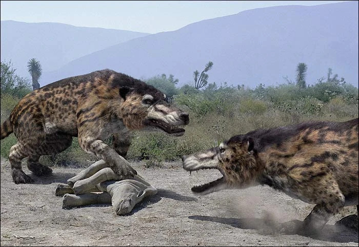
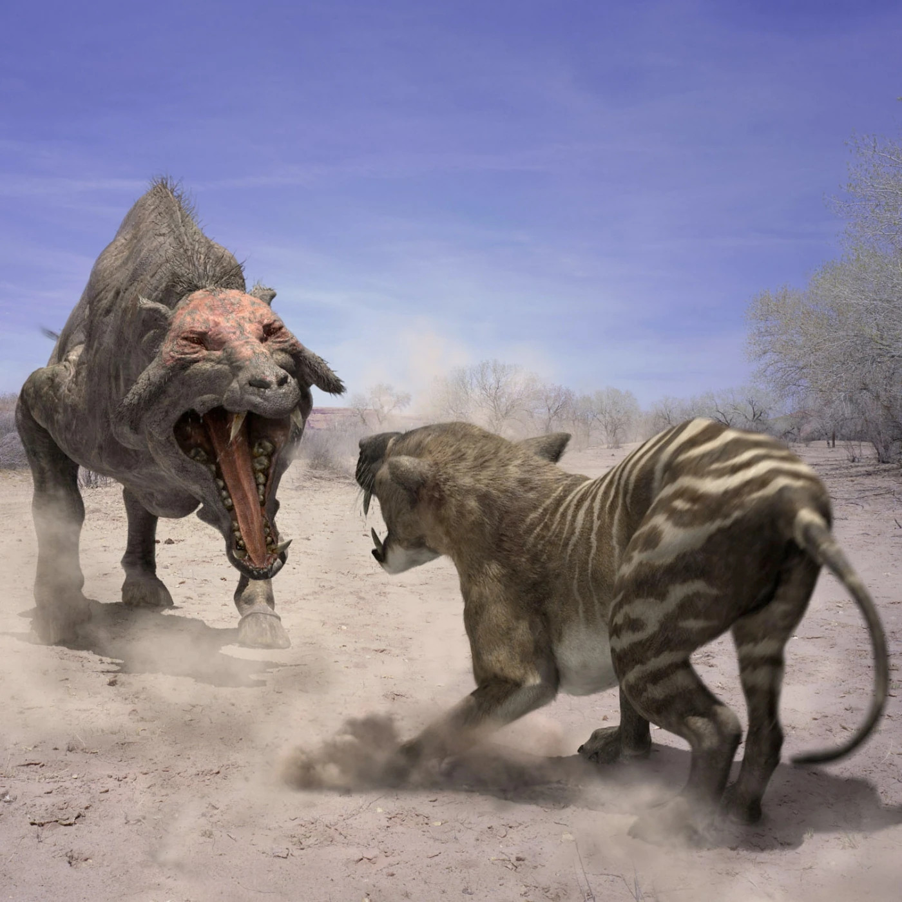
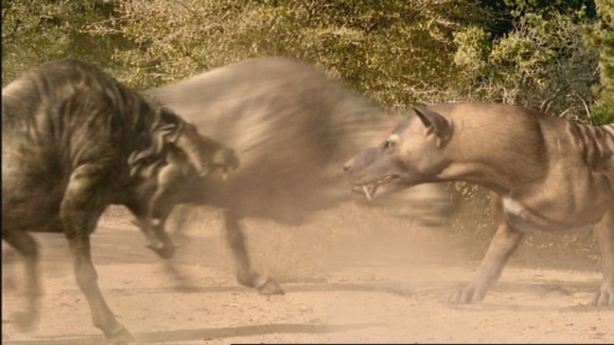
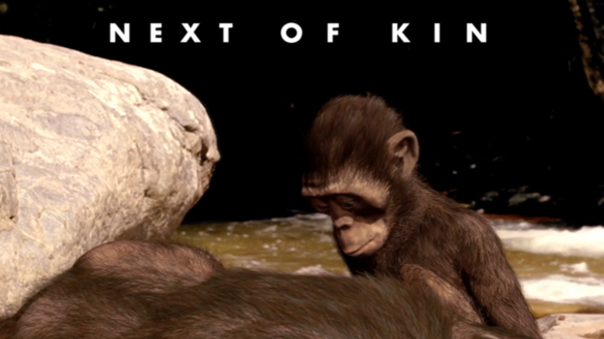
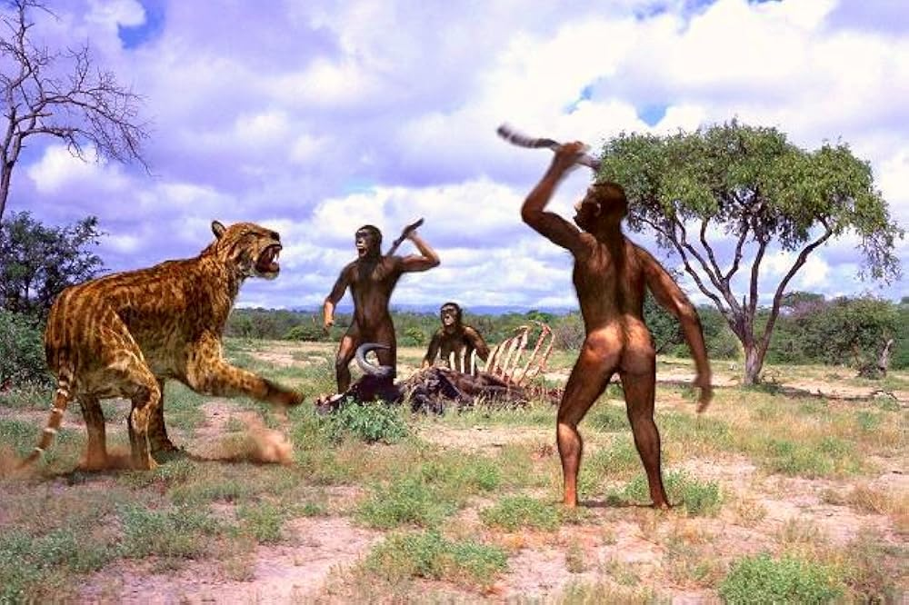
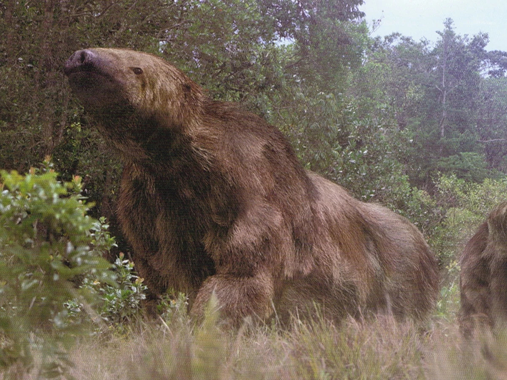
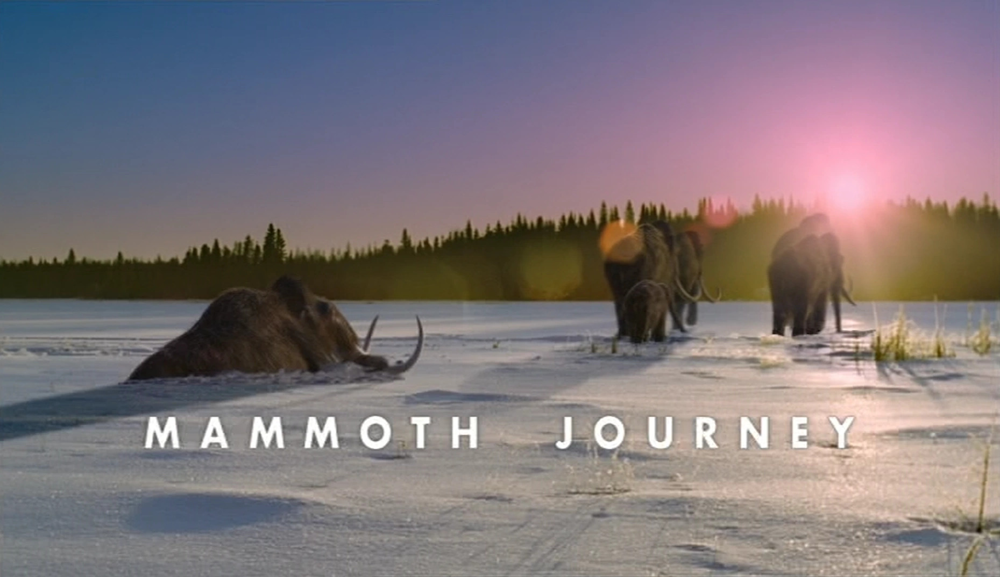
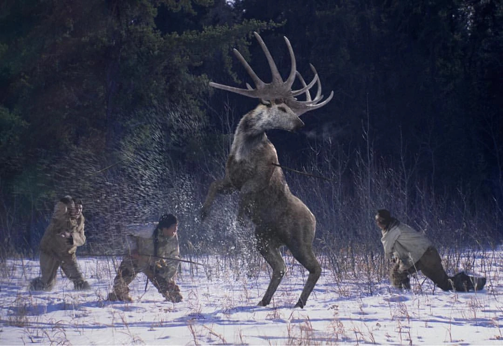

Walking with Beasts
Back in the bizarre world of just twenty years ago, the BBC actually cared about educating, entertaining, and informing people.
I know. Very, very odd.
It’s practically illegal these days isn’t it.
Nowadays, it’s just the message they’re enforcing onto us that they care about.
Anyways, in the spirit of that old ideology, the BBC decided to follow in the wild success of their extravagantly expensive paleodocumentary Walking With Dinosaurs to actually cough up the cash and invest in another, taking place directly after their last series.
This series is about what happened next.
— Kenneth Branagh, 2001We begin in media res, with…
New Dawn
Visuals: 7
What shines in this episode is the ecosystem identity. It it often forgotten that in early Walking With… we are not only viewing our main character: we are getting a glimpse into a prehistoric world. And the environment of this post-dinosaur forest is portrayed perfectly. Even the potential downside of a lack of visual variety is countered by the changing light levels across the day.
The Leptictidium is uniformly the best looking protagonist across the series, with the strongest blend of CGI and animatronic, thanks to its small size. You can quickly see the improvements made between series here with a first episode comparison. Contrastingly, the visual effects across the Gastornis and the Propalaeotherium consistently look as dodgy as Sam Allardyce’s business dealings in 2016.

Gastornis chasing Leptictidium from Walking with Beasts (BBC, 2001) like all images in this article unless expressed otherwise. There is a longstanding debate about the diet of Gastornis Giganteus, and this was not resolved by the time of episode airing, yet Calcium isotope analysis reveals they ate no meat. It just has this farcically sized beak for nothing then.
Storytelling: 7
Unique to this episode is the single day framing device used, which works wonders for the visuals, as well as the script. Writing-wise, there is very little to complain about here, and indeed much to praise. Spirits of the Ice Forest take notes on how to pull off a small scale story.
This is a world where birds eat horses.
— Kenneth Branagh, 2001The rise of whales narrative sets up the next episode passably, and is given sufficient development throughout the episode, but you can’t help but feel there’s a greater narrative out there. Unfortunately, this is a recurring theme for this series in the franchise: missing the bigger picture. Yes, the episode should be about animals, but also something greater than themselves. Such is the testament to the writing team, however, that the superior story can be found within the episode. We are dropped into a strange world here, as the above quote emphasises, and one where mammals are rising, but are not yet large (the true indicator of success). We are in a unique transitional period, and the episode should foreshadow where we are headed. The pieces are there - the Gastornis, the echo of a bygone age, loses its next generation, and the Lepcictidium survive - yet the puzzle is never quite assembled correctly.
Ambience: 4
Perhaps a little generous here, given the lack of standout tracks, but the strangeness and novelty of this world is conveyed well. The strong forest atmosphere, as mentioned above, aids, too.
Creatures: 7
In addition to the strong protagonists, the ants are a highlight, with a sense of power and overwhelming force, not dissimilar to their real world counterparts. Still, the landmark attraction here is the Ambulocetus, a delightful presence in this episode, emblematic of the strange ecosystem present, and indeed one eye towards the mammalian future this series explores. Could Gastornis have a little more presence? Perhaps. Are the monkeys entirely pointless? Absolutely. But their deliberate planting here shows this series’ desire to tell the human story, which pays dividends in future installments.

Ambulocetus, the walking whale. A direct ancestor of modern whales, and the star of this episode, with a unique design. What's interesting to me is the speed of this transition: they went from a tiny shrew-like Indohyus 49MYA, to a fully semi-aquatic Rodhocetus living 45MYA. The idea of slow evolution doesn't seem to apply here.
Whale Killer
Visuals: 8
Whilst I fully accept my knowledge of mangroves is exclusively limited to Minecraft and Shrek, I am still shocked mangrove forests can look so stunningly beautiful. You have this pale, almost turquoise water flowing through the wooden roots and golden sand. The ocean is still functioning under the same excellent operating system as Cruel Seas. And, as this episode somehow has three distinct ecosystems at play, the dry scrubland interior is passable (hint: it has dust, hence looks bad).
Creature modelling is a fair bit worse than the backgrounds, however. Embolotherium is a low point for the series thus far, and despite its memorable appearance, was a step too far it seems for 2001 CGI.
Storytelling: 6
It is almost a Buddhist mantra that one must show, not tell, in KS3 English.
That is a difficult task for a documentary featuring an omniscient narrator. And an unenviable one when your job is to somehow climate chaos via the changing of ocean currents. While we see the effects a severe drought can have onscreen, or a sandstorm, ocean currents are a tad more tricky. When this climate chaos is all the narrator seems to go on about, it becomes difficult to take him seriously.
Additionally, like Giant of the Skies before it, this story undergoes a monstrous detour. There is no function for Andrewsarchus and the Embolotherium in this story. They are not even part of the same ecosystem as Basilosaurus. They are utterly superfluous, which is a shame because their subplot itself is strong and a little distressing. It dives surprisingly deeply into animal emotions, instinct, and caregiving.
I’m really talking myself down from this 6 rating here, aren’t I? We also suffer from a slight lack of emotional attachment to the Basilosaurus. Except, the redemption comes from perhaps the greatest line ever uttered in a television programme ever.
He is, in a sense, a sheep in wolf's clothing.
— Kenneth Branagh, 2001Ambience: 5
The bongo drums give the mangrove forest a nice feel, and the Basilosaurus itself has a solid leitmotif. Really, all it takes are a couple of distinct themes, along with the ever strong atmospheric noises, and you get a 5. Largely, this is the category Walking With… will score highest on, even amongst its own normalised rankings.

Andrewsarchus is the largest know terrestrial carnivorous mammal, despite the fact it is only known from the top half of a single skull. The 83.4 cm length explains it a little more. No issue for paleontologists, however, as it is a common joke that the teeth and feet are all they need. I may post a little more on this glorious creature, but for now, just take them as being a very odd whale ancestor who is kind of related to Enteledonts. And maybe Hippos. The Wikipedia was very unclear.
Creatures: 8
As is characteristic for this series, the Big Baddy animal steals the show, and the previously unknown Andrewsarchus steals the show here. So much character for a Mesonychid known only by one bone and a stupid name. We almost have a full set of useful, meaningful characters here with even the sharks getting a role, except the Apidium fulfilling their mandatory humanoid diversity quota and nothing else. Basilosaurus delivers about what you’d expect for one of nature’s all-time greats, but it is the large cast of characters that promote this grade to an 8.
Land of Giants
Visuals: 6
To understand my score now and going forward, we must dive into the in-Universe explanation for what Walking with Beasts is. Walking with Dinosaurs presents itself as a nature documentary in the past, without concerning itself with who operates the camera, meaning it exists to imitate what you’d expect from a programme like this, except it exists with a few degrees of freedom. Walking with Beasts, however, falls into that classic US Office S9 trap of boldly assuming people care about the meta explanation of the show’s production. This results in these very odd shots of the animals breaking the fourth wall. There's a very goofy shot of the Indricothere running at the camera man, the camera falling to the ground, and the shot continuing, which serves only to break the immersion.
Yet Mongolia is stunning. The wide long-takes of Indricotheres are exactly what the series should excel at, and I was pleasantly surprised by the night-vision section. Indricotheres, perhaps due to their size, are stunning throughout.
Wait, you may be thinking dear loyal reader, doesn’t Mongolia have sand? What about the dust? Well, such is the main character’s immense size that you don’t tend to notice the dust, except for the Entelodont fight scene, where an awesome concept is utterly ruined by the woeful rendering.

The primary promotional image for Walking With Beasts (BBC, 2001). The Enteledont's are the highlight of this episode, being such a unique creature. His skull especially is odd yet a quick look at a boar skulls suggest perhaps not.
This is how we expected this episode to look.

This is how the show actually looked. Notice the washed out, Marvel-esque grey filter seemingly superimposed. I appreciate the ambition, buut the execution is poor.
In another ‘Beastism’ we have these bizarre shots of slow-motion chase sequences. Except here there’s one with just splashing in a puddle. Weird.
Storytelling: 7
There is considerable waste and pointless drag on the plot. But. But. I find this greatens the emotional attachment we get to our plucky little baby (feels weird calling something bigger than me a baby but whatever). And the cyclical nature of the story works just like Giant of the Skies’ superb story. What an opening, as well, of the child literally fighting for survival.
This episode is ‘Beasts’ at its most ‘Beastiest’, and that means the start of weird documentarian LARPing. I don’t care that we haven’t seen the calf for two months. Don’t tell me that. Stop breaking the WWD format.
Ambience: 4
The Indricothere theme is mediocre, but Hell Hogs is a banger. Solid creature noises throughout.
Creatures: 8
On paper, the best lineup in Beasts. This episode takes a stupid supersized running rhino (they’re actually in terms of mammals somewhat of a feature of planet earth, lasting 11M years) and makes it feel like a real animal. The hogs from hell are excellent, although their model can sometimes leave a little too much to the imagination. Chalicotheres are superb, especially the head and thumb puppets used. My criticisms lie primarily at the feet of the Bear Dog. Such a unique cousin creature to the well-known caniformia branch has more potential than this.
Next of Kin
Visuals: 4
Oh dear. The show has, and will continue, to run an overarching human evolution plotline, and so it was only natural that we would become the protagonists eventually. The problem here is that the Australopithecus Afarensis look awful. I have two theories.
You may be familiar with the Uncanny Valley effect, and I recommend Googling it if you are not. It is a common concept, except what is less common is its proposed evolutionary derivation. We are designed to fear other hominids. So it is no surprise that a hominid from our evolutionary past… looks uncanny.
Or the early 2000s CGI looks awful.
You pick.

The title card for Next of Kin, demonstrating the dubious quality of the proto-hominid models. This is supposed to be our main character experiencing extraordinary grief. Austrolopithecus Afarensis is the most famous of our ancestors (note here that the Neanderthals are not our ancestors, but a sister species). We shall see them portrayed better in the coming Walking With Cavemen series, but for now, this is a franchise-low.
Storytelling: 6
I don’t like that they have names. If it’s meant to be a nature documentary, you wouldn’t give them all names. Either way, the characters are paper thin so who cares.
The larger issue here is the lack of meaning in the story. The intro teases the idea of bipedalism being central to our success, and yet it is social cohesion that the climax revolves around. Even the colour vision of these apes is discussed. This episode needs either a) a clear comparison species to make the point be about how our ancestors were better or b) to pick some defining feature to add to the human blueprint, which is key to our success, and thus the story is about the true beginnings of humanity.
Ambience: 3
There's only one piece of music, the reclusive yet sought after Rift Valley theme, and they repeat constantly throughout the episode. The valley itself is bizarre: I was labouring under the misapprehension it was a rocky valley, yet there are vast plains. This criticism could come under any of the three categories above, honestly, but the idea of bouldering apes is funny to me.
Creatures: 4
Awful. In the interests of saving costs, an odd feature of Walking With… series is they occasionally use stock footage to save costs (often at a vastly different camera quality than the actual shots, but this isn’t a problem here). The usage in this episode is worse than a drug addict’s. Compounding this is the sheer lack of variety present. There are only four real species present: one being a Chalicothere reskin; a woefully textured Dinotherium who are reduced to mere mating elephants; the perennially dull Australopithecus; and the Dinofelis. Dinofelis ought to have summoned the shivers of our ancestors, except his human hunting adaptations are brushed aside, and realistically he should have symbolically died.

An unused promotional shot of Dinofelis in conflict with their 'prey'. My lifelong hatred of all cats originates from these evil beings. Now, sure, Leopards and Megantereon have more evidence linking them to the scene of the crime, but we have a number of hominid skulls with suspicious bite marks on them. All I will say is Dinofelis could fit an entire cranium in its jaw, and the teeth were designed to handle bone-breaking force. You be the judge. Either way, the cats are guaranteed to be at fault.
Sabre Tooth
Visuals: 8
The herd shots are classic Walking With…, as is the chase sequence. There are few overt flaws with the visuals here. The Smilodon are broadly good, although being the main characters they suffer from the most sub-par visuals. The environment almost has a neon look, emphasising its oddity. Despite the evolutionary proximity to modernity all animals in this series have, it does earn its ‘Beasts’ title, as especially here these animals are bizarre. Visually, however, it is strong.
Storytelling: 6
A common trend in WWB is the lower storytelling score on average. I attribute this to two reasons:
1) Stupid breaks from the Walking with Dinosaurs formula, such as naming the central creature Half Tooth, like some cartoon character. There is a Lion King vibe present in the emotional beats of the plot, and that isn’t a good thing. Nature is dramatic enough; we don’t need drama.
2) Slightly underwhelming stories, whose improvements are always teased at by the script. For instance, like with the very best of this franchise’s stories, this episode takes place at a fascinating cross-roads between colliding continents. Why doesn’t it tell the story of those species’ first forays into a brand new world, and who wins and loses is a metaphor for the world to come.
The overall theme is the dominance of the Smilodons, which is supported by the work. The best elements, however, in this story are to do with the Terror Birds. These are treated as scavengers, and despite their dominance over this territory broken by the cats, they are the ones who munch on the dead brother’s corpse. Mixed bag.
Ambience: 2
Often those single-tracked episodes lose out on this score and here is no different. Except Sabre Tooth isn’t Rift Valley, and sounds a little synthetic. Additionally, very few of the animals make a noise, leading to an oddly empty feeling world.
Creatures: 10
It is my intention in this episode to reward the greatest of each category with a ten across the series and this rating surprises me greatly. Firstly, it is helped by an odd situation where the animals are iconic, and yet depictions of them are relatively few. Far more frequently for this period are the ice age animals depicted instead. Megatherium is treated as the GOAT of this landscape, and deservedly so. He looks beautifully imposing. This is the best Smilodon depiction out there. Macrauchenia are so much more interesting than the zebra from the last episode as prey. When Doedicurus is treated as a background character (and he too gets a nice scene with the cubs), you know you’re onto a winner.
Oh, and I didn’t even mention Phorusracus. 10.

The most underutilised 'beast' of all time. Megatherium, whose skeleton can be seen in the Natural History Museum, is a giant ground sloth. In this episode, it is treated as the dominant creature of the landscape, and rightly so. Only one creature was ever truly feared by one of these four tonne adults - a human.
Mammoth Journey
Visuals: 8
I am beyond shocked Mammoths look as good as they do in this series. By all conventional logic, they should look awful, given hair is a known sticking point for CGI. A quick Google search tells me Yak hair is to thank for this, so I’ll let my local Yak know the next time I see him. Even more surprising is just how many Mammoths are in this episode and how often they appear. In the summery sunlight on barren grasslands, the visual quality of both the Mammoths and the backgrounds take a nosedive, but the wintery mountains provide stronger scenery as well as a layer of disguise for the many Mammuthus primigenius. The Cave Lions are our third Smilodon reskin.

The title card for this episode, featuring the group finally leaving their fellow herd member to their demise. Its significance is emphasised by the assumed emotional intelligence of these animals, which was at least comperable to elephants. The Mammoths survived longer than people think, however, to beyond the building of the pyramids. A few isolated populations hung on to 4,000 years ago, despite the genetic bottlenecks, and we still do not know why these creatures went extinct. Never fear, though, as due to their extant relatives, and several Mammoth mummies (the bandage version, not the females), we stand a good chance of one day revivng this epic species.
Storytelling: 8
It’s a classic Walking With… story. There are no ‘Beastisms’ present, thankfully. It sticks to being the story of an ecosystem surviving the Ice Age, with the central migrating Mammoths enabling greater geographical flexibility. Elephants are such a brilliant choice for a central animal. This is due to their ability to emote, and the episode wisely has them experiencing grief, connection, and even joy. They feel like they socialise more than the apes in episode 4.
You do feel a sense of meaninglessness throughout, as there is a slight detachment to the anchor animal of the episode. Yet, that is all concentrated in the superb ending, which almost sends shivers down my spine.
“No species lasts forever”
— Kenneth Branagh, 2001This is the story of how humans came to dominate, and it almost makes you think that’s the story of this series. It is chilling to realise that, intentionally, or not, we are the only creatures left alive in this episode.
This brought me to a larger point, which I will not attribute to this series because it's an incredibly niche idea. When looking at the series, it is easy to spectacle at the great variety of brilliant and great mammalian beasts present. Mammoths, Deinotherium, Megatherium, Gastornis, Enteledonts, Andrewsarchus, Paraceratherium, Phorusrhacos, Basilosaurus. And I was hit with the reality that all of them are no longer with us.

An example of one of the animals we've outlived. Once known hominid prey, this Irish Elk has a truly farcical set of antlers. The old ideas of humans causing these species to go extinct, however, are perhaps a little too simplistic. Remember, we and other hominid species evolved alongside these animals and lived with them for thousands of years. But, often attributed to a changing climate, these Megaloceros soon went the way of all those creatures listed above: another evolutionary dead end.
I don’t mean their broad animal types - we do still have birds and elephants and pigs. But all of them were evolutionary dead-ends. This series only ever allows two species (+- horses but who cares about them), the human and the whale, to ever have descendents. Ambulocetus, and then Dorudon are direct descendents of whales, whereas Australopithecus is deeply connected to us. And that is it.
Everything else has been lost to time, with no impact on this current planet. I’m not going to blame humans here for that, obviously, as we aren’t even strongly linked to the death of the Mammoth who we lived alongside. It truly strengthens the message that no species lasts forever, and those alive right now are the rare few who have held on thus far.
Final Rankings
| Episode | Visuals | Storytelling | Ambience | Creatures | Total |
|---|---|---|---|---|---|
| New Dawn | 7 | 7 | 4 | 7 | 25 |
| Whale Killer | 8 | 6 | 5 | 8 | 26 |
| Land of Giants | 6 | 7 | 4 | 8 | 21 |
| Next of Kin | 4 | 6 | 3 | 4 | 17 |
| Sabre Tooth | 8 | 6 | 2 | 10 | 26 |
| Mammoth Journey | 8 | 8 | 5 | 9 | 30 |
I am genuinely surprised that episode 6 managed to win. I was also shocked at how poor Next of Kin scored, even though I knew it was terrible beforehand.
I won’t draw any larger trends from this compared to WWD, as I shall do a separate post for that. All that is left for me to say is onwards and upwards to the realm of Monsters!